How to install
Pick your device and follow along. It takes about five minutes. Latest version: Demo 2.
Windows
Windows 10 or 11. The installer sets everything up and keeps the game updated.
-
Get DDLC
Download Doki Doki Literature Club! from ddlc.moe and leave
ddlc-win.zipin your Downloads folder. (Got the original DDLC on Steam? That works too.) The installer finds it by itself. -
Run DDSD-Setup.exe
Your browser might say the file "isn't commonly downloaded": choose Keep.
Then Windows might show a blue "Windows protected your PC" box. That's because DDSD is a small fan project and doesn't pay for a code-signing certificate. Click More info, then Run anyway.
Is it safe? It only installs into your own user folder (%LOCALAPPDATA%\DDSD), never asks for admin rights, and checks every download before using it. -
Press Install
The launcher opens and puts a shortcut on your Desktop and Start menu. Press Install: it downloads the game (about 100 MB) and copies in DDLC's files.
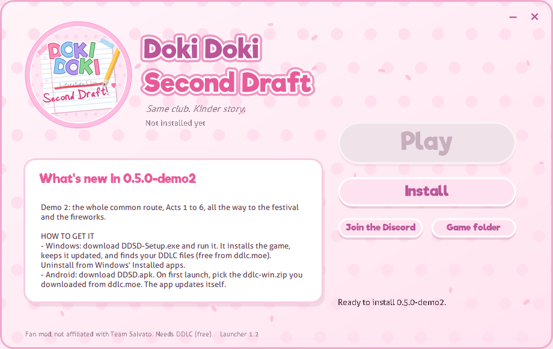
the launcher, before installing "DDSD needs DDLC's files"? Press Locate DDLC and pick yourddlc-win.zipor your DDLC folder. -
Play!
When it says Ready to play, press Play. Next time, open Doki Doki Second Draft from your Desktop or Start menu.
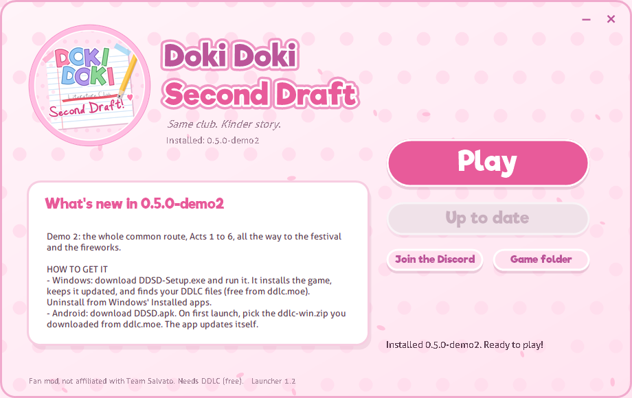
installed and ready
Updates
Always start the game from the DDSD shortcut. When there's a new version the launcher shows Update: one click, and your saves and DDLC's files stay put. The launcher updates itself too.
Uninstalling
Settings → Apps → Installed apps → Doki Doki Second Draft → Uninstall. Your saves stay in %APPDATA%\RenPy in case you come back.
Android
Android 5 or newer. You need about 600 MB free while you set it up. Do every step on the phone itself.
All screenshots are from a real phone (a Pixel 3a). Yours may look a little different.
-
Download DDLC (the PC version)
Open DDLC's itch.io page (it's where ddlc.moe sends you) and tap Download Now. Tap No thanks, just take me to the downloads, then the Download button under DDLC (Windows).
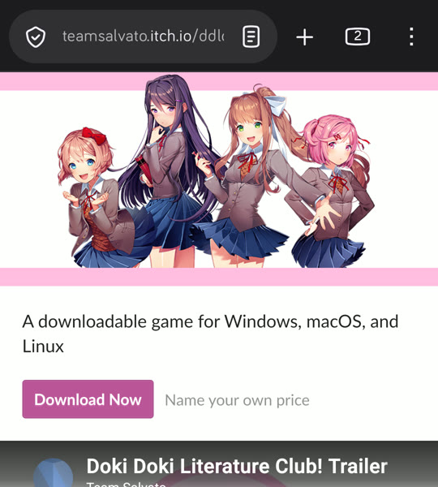
tap Download Now 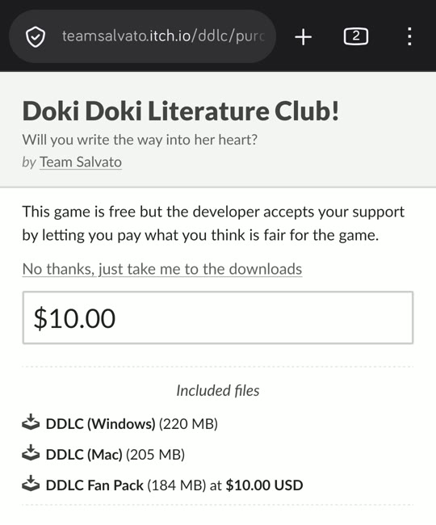
it's free: tap "No thanks..." 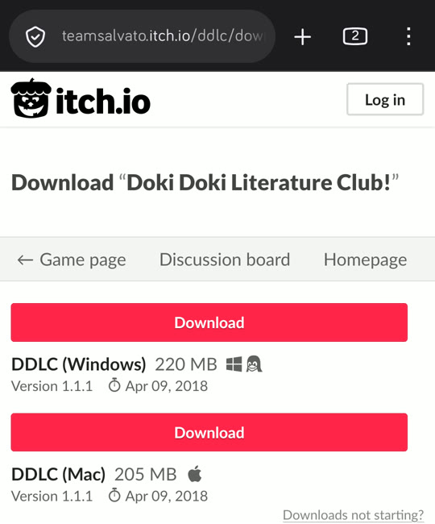
download DDLC (Windows) Yes, the Windows one, on a phone. You getddlc-win.zip(about 230 MB). Don't unzip it: DDSD reads it directly, and only takes the art and music out. -
Download DDSD.apk and open it
Tap the red DDSD.apk button above (if your browser warns you, tap Download anyway). Then open it from your notifications or your Files app.
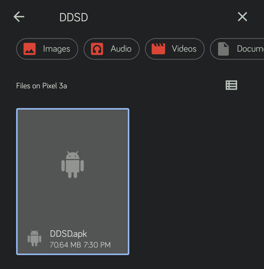
tap DDSD.apk The first time, Android says it isn't allowed to install apps from there. Tap Settings, switch on Allow from this source, and go back. -
Get past Play Protect
Google doesn't know DDSD (it's not on the Play Store: Team Salvato's rules don't allow fan games there), so it suggests a scan. Tap More details, then Install without scanning. Your phone may ask for your fingerprint or PIN to confirm.
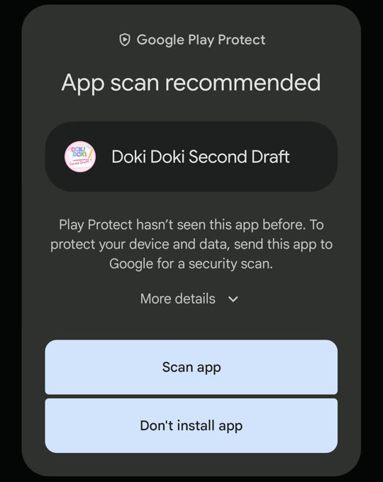
tap More details 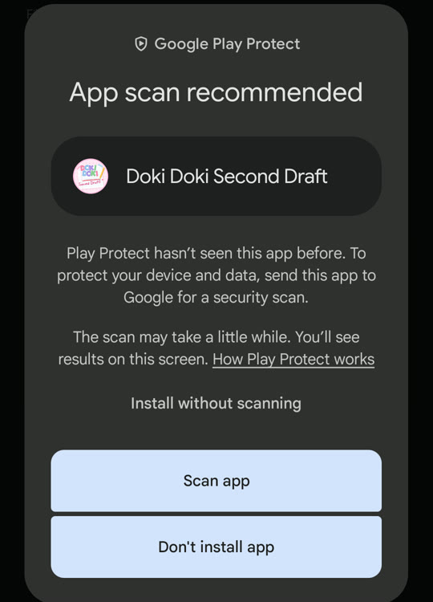
then Install without scanning 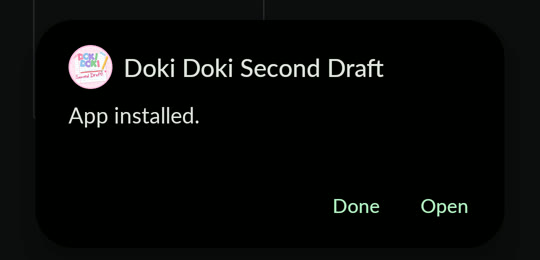
done! tap Open -
Tap PC, then pick ddlc-win.zip
The first time DDSD opens, it asks for DDLC's files. Tap PC (you downloaded the PC version in step 1; ignore the "select Android if unsure" line). Then pick
ddlc-win.zip. Tap the search icon and type ddlc if you can't see it.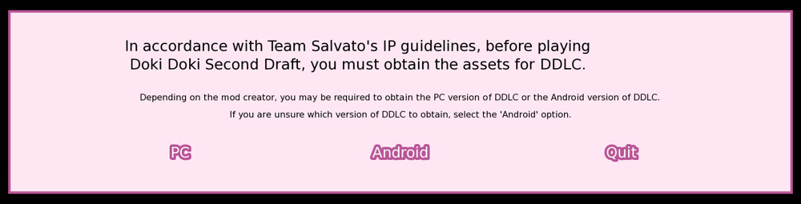
tap PC 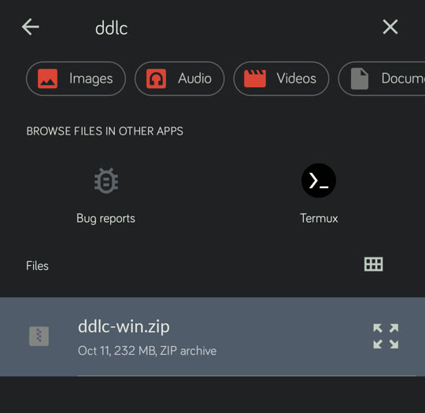
tap ddlc-win.zip -
Wait a minute, then play!
DDSD copies the art and music out of the zip, restarts by itself, and you're in. You can delete
ddlc-win.zipafterwards to free up space.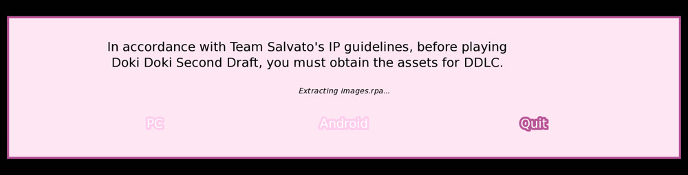
"Extracting images.rpa..." 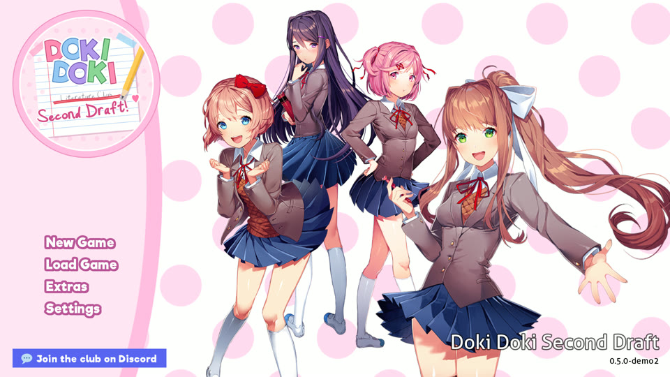
welcome to the club ♥ Good to know: the very first start takes about 20 seconds. Black bars at the sides are normal on long phones (the game is 16:9). Tap the bottom of the screen for History, Skip, Auto, Save and Load.
Updates happen inside the app
When a new version comes out, an Update available button appears at the top right of the main menu. Tap it, tap Update, and Android installs it over the old one. Your saves and DDLC's files stay, so you don't need the zip again.
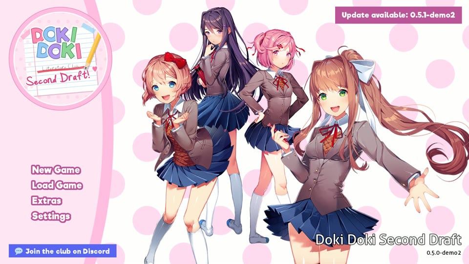
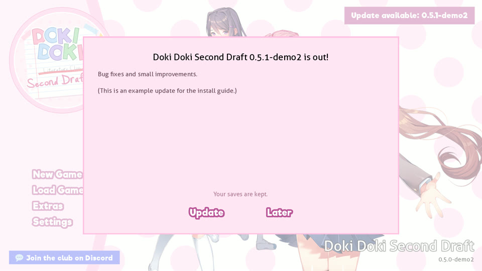
The first time, Android asks to let DDSD install apps (same as step 2), and Play Protect might show up again (same as step 3).
Mac, Linux & manual
The plain game, for macOS, Linux, Steam Deck, or if you'd rather not use the installer.
Unzip both
Unzip
ddsd-game.zipand your DDLC download (ddlc-win.ziporddlc-mac.zip) somewhere easy, like your Desktop.Copy DDLC's three files
In DDLC's
gamefolder, copyaudio.rpa,fonts.rpaandimages.rpa, and paste them into thegamefolder inside Doki Doki Second Draft.Not scripts.rpa! That one is DDLC's story and would clash with ours. On a Mac, DDLC's files are inside the app: right-click it → Show Package Contents → Contents → Resources → autorun → game.Play
Run
DokiDokiSecondDraft.exe(Windows),DokiDokiSecondDraft.sh(Linux) orDokiDokiSecondDraft.app(Mac: the first time, right-click → Open).Manual installs don't update themselves: grab the new zip and copy the three files over again.
Help!
Is it really free?
Yes, always. Team Salvato's guidelines don't allow selling fan games, and we wouldn't anyway.
Why do I need DDLC? Can't you include it?
The characters, art and music belong to Team Salvato. Their guidelines say fan games have to take them from the player's own copy of DDLC, so we can't include it or download it for you. The original DDLC is free at ddlc.moe.
I have DDLC Plus. Does that work?
Not on its own: DDLC Plus doesn't have audio.rpa, fonts.rpa and images.rpa. The original DDLC is still free, so grab it from ddlc.moe.
Is it scary? Is it spoilery?
Not scary at all: no jump scares, glitches or fourth-wall stuff. It's a wholesome romance with a teen cast (hand-holding, confessions, a few sweet kisses). It does assume you've finished DDLC, so it spoils the original.
Will updates delete my saves?
Never. On Windows saves live in %APPDATA%\RenPy (and the game folder). On Android they stay inside the app until you uninstall it.
Windows says "Windows protected your PC". Is it a virus?
No. Windows says that about any program without a paid code-signing certificate, which small fan projects usually don't have. Click More info → Run anyway.
Android says "App not installed".
- Make sure the download finished (about 70 MB) and try again.
- If you installed a DDSD APK from somewhere else before, uninstall that one first.
- Check you have about 600 MB free.
Android: "No DDLC assets were found" or "This ZIP is missing..."
You probably tapped Android instead of PC, or picked another file. Open DDSD again, tap PC, and pick ddlc-win.zip.
Steam Deck? iPhone? Mac?
Steam Deck and Mac: yes, with the manual install. iPhone and iPad: no, sorry, there's no way to install fan games there.
I found a bug / I have an idea!
Tell us on Discord in #bug-reports or #suggestions. Screenshots help a lot.